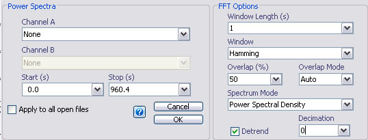
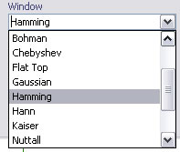
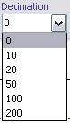

Power Spectral Analysis
Email: sigtool@kcl.ac.uk
Email: sigtool@kcl.ac.uk
Author: Malcolm Lidierth
Updated: November 2007
Power spectra and power spectral densities are estimated using the Welch modified periodogram method (see Press et al. 1992; Chapter 14). The data are divided into sections of user selected length. Optionally, the linear trend is removed from each section. The data section is then multiplied by the weights of a window function and the FFT is taken. Successive data sections may overlap in time.
Average spectra and spectral densities
For spectra, the transforms are averaged to form a periodogram which is scaled to provide power spectral or power spectral density estimates as selected.
Spectrograms
For spectrograms showing a time-frequency analysis, the power at each frequency is shown for each data section together with the data section time

A standard channel selection panel allows selection of the channels and period for analysis. Note that Channel A and Channel B selections will be treated identically. Any waveform channels may be selected and in any combination: there are no constaints requiring channels to have equal sample rates for example.
The FFT Options panel sets the parameters for the spectral analysis:
Sets the duration of the data sections in seconds. The bin width of the resulting spectrum will be the reciprocal of this (in Hz). Note that because the window length remains constant, the length of the underlying FFT will vary with the sampling rate on each channel.
A range of windows is available from the drop-down menu if the Signal Processing Toolbox is installed. If not, the range will be more limited.

The Hamming window is selected by default. For spectral, rather than spectral density measurements, choose a Flat Top window. For a discussion of Window functions, see Heinzel at al. (2002)
Overlap:
Application of a window means that data at the ends of each section contribute less to the FFT. You can make more of the data by overlapping the data sections. The optimal overlap will depend on the window selected above. The default value is 50% which is suitable for a Hamming window (see Heinzel at al., 2002).
Overlap Mode:
Whether the Overlap is used or not depends on the setting of Overlap Mode:
When set to
Auto: Data sections will be overlapped only for continuously sampled waveforms. This is the default.
Off: Data sections will not be overlapped.
On: All channels will overlapped including frame-based or triggered waveform channels. In general, overlapping non-contiguous blocks of data will not make sense and will introduce artefacts into the result.
Spectrum Mode:
For biological signals, power spectral densities are usually used. Three options are offered:
Power Spectral Density (Units e.g. V2.Hz-1)
Linear Power Spectral Density (the square root of the PSD; Units e.g. V/√Hz)
PSD x Hz (the PSD multiplied by the binwidth, for comparison with some commercial packages that use this scaling. Units e.g. V2).
To find the power within a range of frequencies from a power spectral density, take the average of the power in the bins over that range.
If you have a rigidly fixed freqency signal (e.g. from a signal generator) power spectra are more suitable. To options are provided:
Power Spectrum (Units e.g. V2)
Linear Power Spectrum (the square root of the power; Units e.g. V)
The power spectrum is scaled so that peaks in the spectrum accurately reflect the power at that frequency. Data to either side of each peak are not accurate.
For further details see Heinzel et al. (2002).
.
Detrend
When detrend is selected, each data section will be pre-processed by removing any DC component and linear trend from it. As an alternative, pre-filter the channel to remove low frequencies using the Waveform->Digital Filter menu.
Decimate:
Biological signals are often oversampled. If you have sampled a signal at 5000Hz, power spectral estimates will be returned for DC-2500Hz. When returning spectrograms, this can lead to out-of-memory errors. If you are interested only in lower frequencies, pre-process the signal by decimating it. Note, however, that it will often more efficient to decimate a channel from the main sigTOOL menu, writing data to a new channel which can then be analysed without further decimation in the power spectrum functions.
Decimation applies a low-pass anti-aliasing filter to the data then selects every Nth data point where N is the value set in the Decimation menu:

For further details, see the help from the Waveform->Decimate menu.
William H. Press, Brian P. Flannery, Saul A. Teukolsky, and William T. Vetterling (1992)
Numerical Recipes in C: The Art of Scientific Computing CUP. [http://www.nrbook.com/a/bookcpdf.php]
G. Heinzel, A. Rudiger and R. Schilling (2002)
Spectrum and spectral density estimation by the Discrete Fourier transform (DFT), including a comprehensive list of window functions and some new at-top windows. [http://www.rssd.esa.int/SP/LISAPATHFINDER/docs/Data_Analysis/GH_FFT.pdf]
© The Author and King's College London, 2007-